There are currently three time evolvers and one minimization evolver in the standard OOMMF distribution. The time evolvers are Oxs_EulerEvolve, Oxs_RungeKuttaEvolve, and Oxs_SpinXferEvolve. The minimization evolver is Oxs_CGEvolve.
The Specify block has the form
- Specify Oxs_EulerEvolve:name {
- alpha
![$\mbox{\renewcommand {\arraystretch}{0}$\begin{array}[b]{@{}c@{}}\alpha\\ \rule{1pt}{0pt}\end{array}$}$](img26.gif)
- gamma_LL
![$\mbox{\renewcommand {\arraystretch}{0}$\begin{array}[b]{@{}c@{}}\bar{\gamma}\\ \rule{1pt}{0pt}\end{array}$}$](img24.gif)
- gamma_G
![$\mbox{\renewcommand {\arraystretch}{0}$\begin{array}[b]{@{}c@{}}\gamma\\ \rule{1pt}{0pt}\end{array}$}$](img29.gif)
- do_precess precess
- min_timestep minimum_stepsize
- max_timestep maximum_stepsize
- fixed_spins {
- atlas_spec
- region1 region2 ...
- }
- start_dm
m
- error_rate rate
- absolute_step_error abs_error
- relative_step_error rel_error
- step_headroom headroom
- }
All the entries have default values, but the ones most commonly adjusted are listed first.
The options alpha, gamma_LL and
gamma_G are as in the Landau-Lifshitz-Gilbert ODE
(7.2), (7.3), where the units on
 and
and
 are m/A . s and
are m/A . s and
 is dimensionless. At most one of
is dimensionless. At most one of
 and
and
 should be specified. If
neither is specified, then the default is
should be specified. If
neither is specified, then the default is
 = 2.211 x 105.
(Because of the absolute value convention adopted on
= 2.211 x 105.
(Because of the absolute value convention adopted on
 and
and
 in
(7.2), (7.3), the sign given to the value of
gamma_LL or gamma_G in the Specify block is
irrelevant.) The default value for
in
(7.2), (7.3), the sign given to the value of
gamma_LL or gamma_G in the Specify block is
irrelevant.) The default value for
 is 0.5, which is
large compared to experimental values, but allows simulations to
converge to equilibria in a reasonable time. However, for accurate
dynamic studies it is important to assign an appropriate value to
is 0.5, which is
large compared to experimental values, but allows simulations to
converge to equilibria in a reasonable time. However, for accurate
dynamic studies it is important to assign an appropriate value to
 .
.
The do_precess value should be either 1 or 0, and determines whether or not the precession term in the Landau-Lifshitz ODE (i.e., the first term on the righthand side in (7.2)) is used. If precess is 0, then precession is disabled and the simulation evolves towards equilibrium along a steepest descent path. The default value is 1.
The min_timestep and max_timestep parameters provide soft limits on the size of steps taken by the evolver. The minimum value may be overridden by the driver if a smaller step is needed to meet time based stopping criteria. The maximum value will be ignored if a step of that size would produce a magnetization state numerically indistinguishable from the preceding state. The units for min_timestep and max_timestep are seconds. Default values are 0 and 10-10 respectively.
The optional fixed_spins entry allows the magnetization in selected regions of the simulation to be frozen in its initial configuration. The value portion of the entry should be a list, with the first element of the list being either an inline atlas definition (grouped as a single item), or else the name of a previously defined atlas. The remainder of the list are names of regions in that atlas for which the magnetization is to be be fixed, i.e., M(t) = M(0) for all time t for all points in the named regions. Fields and energies are computed and reported normally across these regions. Although any atlas may be used, it is frequently convenient to set up an atlas with special regions defined expressly for this purpose.
The stepsize for the first candidate iteration in the problem run is selected so that the maximum change in the normalized (i.e., unit) magnetization m is the value specified by start_dm. The units are degrees, with default value 0.01.
The four remaining entries, error_rate,
absolute_step_error, relative_step_error, and
step_headroom, control fine points of stepsize selection,
and are intended for advance use only. Given normalized magnetization
mi(t) at time t and position i, and candidate magnetization
mi(t +  t) at time
t +
t) at time
t +  t, the error at position i is
estimated to be
t, the error at position i is
estimated to be

A candidate step is accepted if the maximum error across all positions
i is smaller than absolute_step_error,
error_rate
x  t, and
relative_step_error
x |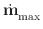|
t, and
relative_step_error
x |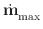| t, where
|| is the maximum value of
|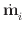| across all i at time t. If the step is rejected,
then a smaller stepsize is computed that appears to pass the above
tests, and a new candidate step is proposed using that smaller stepsize
times step_headroom. Alternatively, if the step is accepted,
then the error information is used to determine the stepsize for the
next step, modified in the same manner by step_headroom.
t, where
|| is the maximum value of
|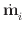| across all i at time t. If the step is rejected,
then a smaller stepsize is computed that appears to pass the above
tests, and a new candidate step is proposed using that smaller stepsize
times step_headroom. Alternatively, if the step is accepted,
then the error information is used to determine the stepsize for the
next step, modified in the same manner by step_headroom.
The error calculated above is in terms of unit magnetizations, so the natural units are radians or radians/second. Inside the Specify block, however, the error_rate and absolute_step_error are specified in degrees/nanosecond and degrees, respectively; they are converted appropriately inside the code before use. The relative_step_error is a dimensionless quantity, representing a proportion between 0 and 1. The error check controlled by each of these three quantities may be disabled by setting the quantity value to -1. They are all optional, with default values of -1 for error_rate, 0.2 for absolute_step_error, and 0.2 for relative_step_error.
The headroom quantity should lie in the range (0, 1), and controls how conservative the code will be in stepsize selection. If headroom is too large, then much computation time will be lost computing candidate steps that fail the error control tests. If headroom is small, then most candidate steps will pass the error control tests, but computation time may be wasted calculating more steps than are necessary. The default value for headroom is 0.85.
In addition to the above error control tests, a candidate step will also be rejected if the total energy, after adjusting for effects due to any time varying external field, is found to increase. In this case the next candidate stepsize is set to one half the rejected stepsize.
The Oxs_EulerEvolve module provides five scalar, one scalar field, and three vector field outputs. The scalar outputs are
The scalar field output is
The vector field outputs are
Example: octant.mif.
- Specify Oxs_RungeKuttaEvolve:name {
- alpha
- gamma_LL
- gamma_G
- do_precess precess
- allow_signed_gamma signed_gamma
- min_timestep minimum_stepsize
- max_timestep maximum_stepsize
- fixed_spins {
- atlas_spec
- region1 region2 ...
- }
- start_dm
- start_dt start_timestep
- stage_start scontinuity
- error_rate rate
- absolute_step_error abs_error
- relative_step_error rel_error
- energy_precision eprecision
- min_step_headroom min_headroom
- max_step_headroom max_headroom
- reject_goal reject_proportion
- method subtype
- }
Most of these options appear also in the Oxs_EulerEvolve class. The repeats have the same meaning as in that class, and the same default values except for relative_step_error and error_rate, which for Oxs_RungeKuttaEvolve have the default values of 0.01 and 1.0, respectively. Additionally, the alpha, gamma_LL and gamma_G options may be initialized using scalar field objects, to allow these material parameters to vary spatially.
The allow_signed_gamma parameter is for simulation testing
purposes, and is intended for advanced use only. There is some lack of
consistency in the literature with respect to the sign of
 . For this reason the Landau-Lifshitz-Gilbert
equations are presented above (7.2, 7.3)
using the absolute value of
. For this reason the Landau-Lifshitz-Gilbert
equations are presented above (7.2, 7.3)
using the absolute value of
 . This is the
interpretation used if allow_signed_gamma is 0 (the default). If
instead allow_signed_gamma is set to 1, then the
Landau-Lifshitz-Gilbert equations are interpreted without the absolute
values and with a sign change on the
. This is the
interpretation used if allow_signed_gamma is 0 (the default). If
instead allow_signed_gamma is set to 1, then the
Landau-Lifshitz-Gilbert equations are interpreted without the absolute
values and with a sign change on the
 terms, i.e., the
default value for
terms, i.e., the
default value for
 in this case is
-2.211 x 105 (units are m/A . s). In this setting, if
in this case is
-2.211 x 105 (units are m/A . s). In this setting, if
 is set positive then the spins will precess backwards about the
effective field, and the damping term will force the spins away
from the effective field and increase the total energy. If you are
experimenting with
is set positive then the spins will precess backwards about the
effective field, and the damping term will force the spins away
from the effective field and increase the total energy. If you are
experimenting with
 , you should either set
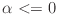 to force spins back towards the effective field,
or disable the energy precision control (discussed
below).
, you should either set
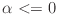 to force spins back towards the effective field,
or disable the energy precision control (discussed
below).
The two controls min_step_headroom (default value 0.33) and max_step_headroom (default value 0.95) replace the single step_headroom option in Oxs_EulerEvolve. The effective step_headroom is automatically adjusted by the evolver between the min_headroom and max_headroom limits to make the observed reject proportion approach the reject_goal (default value 0.05).
The method entry selects a particular Runge-Kutta implementation. It should be set to one of rk2, rk4, rkf54, rkf54m, or rkf54s; the default value is rkf54. The rk2 and rk4 methods implement canonical second and fourth global order Runge-Kutta methods[27], respectively. For rk2, stepsize control is managed by comparing at the middle and final points of the interval, similar to what is done for stepsize control for the Oxs_EulerEvolve class. One step of the rk2 method involves 2 evaluations of .
In the rk4 method, two successive steps are taken at half the nominal step size, and the difference between that end point and that obtained with one full size step are compared. The error is estimated at 1/15th the maximum difference between these two states. One step of the rk4 method involves 11 evaluations of , but the end result is that of the 2 half-sized steps.
The remaining methods, rkf54, rkf54m, and rkf54s, are closely related Runge-Kutta-Fehlberg methods derived by Dormand and Prince[8,9]. In the nomenclature of these papers, rkf54 implements RK5(4)7FC, rkf54m implements RK5(4)7FM, and rkf54s implements RK5(4)7FS. All are 5th global order with an embedded 4th order method for stepsize control. Each step of these methods requires 6 evaluations of if the step is accepted, 7 if rejected. The difference between the methods involves tradeoffs between stability and error minimization. The RK5(4)7FS method has the best stability, RK5(4)7FM the smallest error, and RK5(4)7FC represents a compromise between the two. The default method used by Oxs_RungeKuttaEvolve is RK5(4)7FC.
The remaining undiscussed entry in the Oxs_RungeKuttaEvolve Specify block is energy_precision. This should be set to an estimate of the expected relative accuracy of the energy calculation. After accounting for any change in the total energy arising from time-varying applied fields, the energy remainder should decrease from one step of the LLG ODE to the next. Oxs_RungeKuttaEvolve will reject a step if the energy remainder is found to increase by more than that allowed by eprecision. The default value for eprecision is 1e-10. This control may be disabled by setting eprecision to -1.
The Oxs_RungeKuttaEvolve module provides the same scalar, scalar field, and vector field outputs as Oxs_EulerEvolve. It also provides the following state data accessible through the MIF GetStateData command:
The full name for each of these items is
Mx My Mz dMx/dt dMy/dt dMz/dt Total E dE/dt pE/pt "Timestep lower bound"
Oxs_RungeKuttaEvolve:<instance_name>:<item_name>,where <instance_name> is the instance name of the object (typically an empty string or something like ``evolver''). For stage start states only the Mx, My, and Mz items are available. These terms, and the corresponding dMx/dt, dMy/dt, and dMz/dt, are component values averaged across the full simulation.
Examples: sample.mif, acsample.mif, spinmag.mif, spinmag2.mif, varalpha.mif, yoyo.mif.
| m | = | ||
| 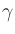 | = | Gilbert gyromagnetic ratio | |
| 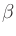 | = | ||
| mp | = | (unit) electron polarization direction | |
| = |  |
||
| = | secondary spin tranfer term. |
The various parameters are defined in the Specify block, which is an extension of that for the Oxs_RungeKuttaEvolve class:
- Specify Oxs_SpinXferEvolve:name {
- alpha
- gamma_LL
- gamma_G
- do_precess precess
- allow_signed_gamma signed_gamma
- min_timestep minimum_stepsize
- max_timestep maximum_stepsize
- fixed_spins {
- atlas_spec
- region1 region2 ...
- }
- start_dm
- stage_start scontinuity
- error_rate rate
- absolute_step_error abs_error
- relative_step_error rel_error
- energy_precision eprecision
- min_step_headroom min_headroom
- max_step_headroom max_headroom
- reject_goal reject_proportion
- method subtype
- P polarization
- P_fixed p_fixed_layer
- P_free p_free_layer
- Lambda

- Lambda_fixed
- Lambda_free
- eps_prime ep
- J current_density
- J_profile Jprofile_script
- J_profile_args Jprofile_script_args
- mp p_direction
- energy_slack eslack
- }
The options duplicated in the Oxs_RungeKuttaEvolve class Specify block have the same meaning and default values here, with the exception of error_rate, which for Oxs_SpinXferEvolve has the default value of -1 (i.e., disabled).
The default values for P and Lambda are 0.4 and 2,
respectively. If preferred, values for the fixed and free layers may be
instead specified separately, through P_fixed,
P_free, Lambda_fixed, and
Lambda_free. Otherwise P_fixed = P_free = P and
Lambda_fixed = Lambda_free = Lambda. Lambda must be larger than or
equal to 1; set Lambda=1 to remove the dependence of
 on
m . mp. If you want non-zero
on
m . mp. If you want non-zero
 , it is set directly as
eps_prime.
, it is set directly as
eps_prime.
Current density J and unit polarization direction
mp are required. The units on J are A/m2. Positive J
produces torque that tends to align
 towards
towards
 .
.
Parameters J, mp, P, Lambda, and eps_prime may all be varied pointwise, but are fixed with respect to time. However, J can be multiplied by a time varying ``profile,'' to model current rise times, pulses, etc. Use the J_profile and J_profile_args options to enable this feature. The Jprofile_script should be a Tcl script that returns a single scalar. Jprofile_script_args should be a subset of {stage stage_time total_time}, to specify arguments appended to Jprofile_script on each time step. Default is the entire set, in the order as listed.
The Oxs_SpinXferEvolve module provides the same five scalar
outputs and three vector outputs as Oxs_RungeKutta, plus the
scalar output ``average J,'' and the vector field outputs ``Spin
torque'' (which is
|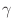|
 m x mp x m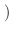) and
``J*mp.'' (Development note: In the case propagate_mp is
enabled, mp is actually
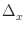
m x mp x m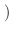) and
``J*mp.'' (Development note: In the case propagate_mp is
enabled, mp is actually
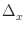 m/
m/ x,
where
x is the flow direction and is the cell dimension
in that direction.)
x,
where
x is the flow direction and is the cell dimension
in that direction.)
The Oxs_SpinXferEvolve class does not include any oersted field arising from the current. Of course, arbitrary fields simulating the oersted field may be added separately as Zeeman energy terms. An example of this is contained in the spinxfer.mif sample file.
There are no temperature effects in this evolver, i.e., it is a T = 0 K code.
Note also that mp is fixed.
For basic usage, the Specify block can be as simple as
Specify Oxs_SpinXferEvolve:evolve {
alpha 0.014
J 7.5e12
mp {1 0 0}
P 0.4
Lambda 2
}
This class is still in early development; at this time the example files are located in oommf/app/oxs/local instead of oommf/app/oxs/examples.
Examples: spinxfer.mif, spinxfer-miltat.mif, spinxfer-onespin.mif.
- Specify Oxs_CGEvolve:name {
- gradient_reset_angle reset_angle
- gradient_reset_count count
- minimum_bracket_step minbrack
- maximum_bracket_step maxbrack
- line_minimum_angle_precision min_prec_angle
- line_minimum_relwidth relwidth
- energy_precision eprecision
- method cgmethod
- fixed_spins {
- atlas_spec
- region1 region2 ...
- }
- }
All entries have default values.
The evolution to an energy minimum precedes by a sequence of line minimizations. Each line represents a one dimensional affine subspace in the 3N dimensional space of possible magnetization configurations, where N is the number of spins in the simulation. Once a minimum has been found along a line, a new direction is chosen that is ideally orthogonal to all preceding directions, but related to the gradient of the energy taken with respect to the magnetization. In practice the line direction sequence cannot be extended indefinitely; the parameters gradient_reset_angle and gradient_reset_count control the gradient resetting process. The first checks the angle between the new direction and the gradient. If that angle is larger than reset_angle (expressed in degrees), then the selected direction is thrown away, and the conjugate-gradient process is re-initialized with the gradient direction as the new first direction. In a similar vein, count specifies the maximum number of line directions selected before resetting the process. Because the first line in the sequence is selected along the gradient direction, setting count to 1 effectively turns the algorithm into a steepest descent minimization method. The default values for reset_angle and count are 80 degrees and 50, respectively.
Once a minimization direction has been selected, the first stage of the line minimization is to bracket the minimum energy on that line, i.e., given a start point on the line—the location of the minimum from the previous line minimization—find another point on the line such that the energy minimum lies between those two points. As one moves along the line, the spins in the simulation rotate, with one spin rotating faster than (or at least as fast as) all the others. If the start point was not the result of a successful line minimization from the previous stage, then the first bracket attempt step is sized so that the fastest moving spin rotates through the angle specified by minimum_bracket_step. In the more usual case that the start point is a minimum from the previous line minimization stage, the initial bracket attempt step size is set to the distance between the current start point and the start point of the previous line minimization stage.
The energy and gradient of the energy are examined at the candidate bracket point to test if an energy minimum lies in the interval. If not, the interval is extended, based on the size of the first bracket attempt interval and the derivatives of the energy at the interval endpoints. This process is continued until either a minimum is bracketed or the fastest moving spin rotates through the angle specified by maximum_bracket_step.
If the bracketing process is successful, then a one dimensional minimization is carried out in the interval, using both energy and energy derivative information. Each step in this process reduces the width of the bracketing interval. This process is continued until the angle between the line direction and the computed energy gradient is within line_minimum_angle_precision degrees of orthogonal, and the width of the interval relative to the distance of the interval from the start point (i.e., the stop point from the previous line minimization process) is less than line_minimum_relwidth. The stop point, i.e., the effective minimum, is taken to be the endpoint of the final interval having smaller energy. The default value for min_prec_angle is 1 degree, and the default value for relwidth is 1. This latter setting effectively disables the line_minimum_relwidth control, which should generally be used only as a secondary control.
If the bracketing process is unsuccessful, i.e., the check for bracketed energy minimum failed at the maximum bracket interval size allowed by maximum_bracket_step, then the maximum bracket endpoint is accepted as the next point in the minimization iteration.
Once the line minimum stop point has been selected, the next iteration begins with selection of a new line direction, as described above, except in the case where the stop point was not obtained as an actual minimum, but rather by virtue of satisfying the maximum_bracket_step constraint. In that case the orthogonal line sequence is reset, in the same manner as when the gradient_reset_angle or gradient_reset_count controls are triggered, and the next line direction is taken directly from the energy gradient.
There are several factors to bear in mind when selecting values for the parameters minimum_bracket_step, maximum_bracket_step, and line_minimum_relwidth. If minimum_bracket_step is too small, then it may take a great many steps to obtain an interval large enough to bracket the minimum. If minimum_bracket_step is too large, then the bracket interval will be unnecessarily generous, and many steps may be required to locate the minimum inside the bracketing interval. However, this value only comes into play when resetting the line minimization direction sequence, so the setting is seldom critical. It is specified in degrees, with default value 0.05.
If maximum_bracket_step is too small, then the minima will be mostly not bracketed, and the minimization will degenerate into a type of steepest descent method. On the other hand, if maximum_bracket_step is too large, then the line minimizations may draw the magnetization far away from a local energy minimum (i.e., one on the full 3N dimensional magnetization space), eventually ending up in a different, more distant minimum. The value for maximum_bracket_step is specified in degrees, with default value 10.
The line_minimum_angle_precision and line_minimum_relwidth values determine the precision of the individual line minimizations, not the total minimization procedure, which is governed by the stopping criteria specified in the driver's Specify block. However, these values are important because the precision of the line minimizations affects the the line direction sequence orthogonality. If both are too coarse, then the selected line directions will quickly drift away from mutual orthogonality. Conversely, setting either too fine will produce additional line minimization steps that do nothing to improve convergence towards the energy minimum in the full 3N dimensional magnetization space.
The energy_precision parameter estimates the relative precision of the energy computations. This is used to introduce a slack factor into the energy comparisons during the bracketing and line minimization stages, that is, if the computed energy values at two points have relative error difference smaller than eprecision, they are treated as having the same energy. The default value for eprecision is 1e-10. The true precision will depend primarily on the number of spins in the simulation. It may be necessary for very large simulations to increase the eprecision value.
The method parameter can be set to either Fletcher-Reeves or Polak-Ribiere to specify the conjugate gradient direction selection algorithm. The default is Fletcher-Reeves, which has somewhat smaller memory requirements.
The last parameter, fixed_spins, performs the same function as for the Oxs_EulerEvolve class.
The Oxs_CGEvolve module provides nine scalar, one scalar field, and two vector field outputs. The scalar outputs are
The scalar field output is
The vector field outputs are
Examples: cgtest.mif, stdprob3.mif, yoyo.mif.